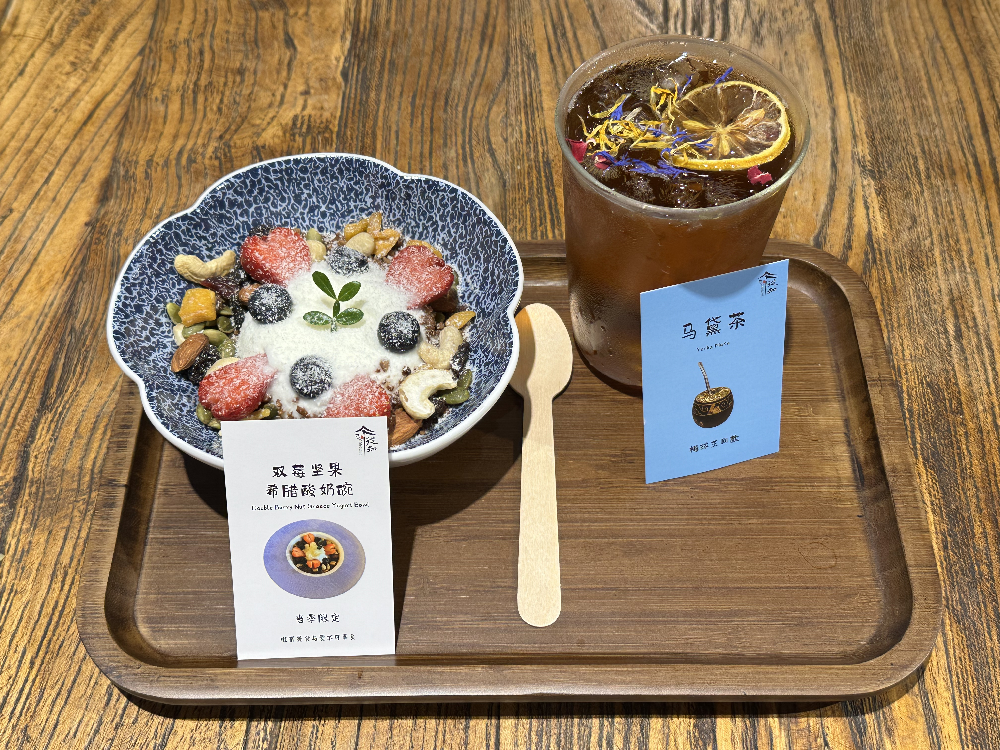

Founder – Congzhi Cafe Space
| Jun. 2023–Present
Established a multifunctional cultural café blending beverages, dining, literature, music, and ancient Chinese aesthetics to create
an immersive experience for young, affluent customers. Developed and executed a comprehensive business plan focused on both day-to-day
retail operations and high-end private events, resulting in sustainable revenue streams. Recruited and trained staff in drink preparation,
dessert plating, customer interaction, and daily operational workflows. Led branding efforts by producing, editing, and publishing promotional
videos and vlogs on the official media channels, significantly enhancing customer engagement and brand recognition. Fostered a
community-oriented atmosphere by hosting literary salons, tea culture events, and live performances.